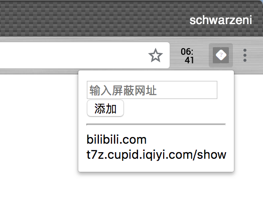
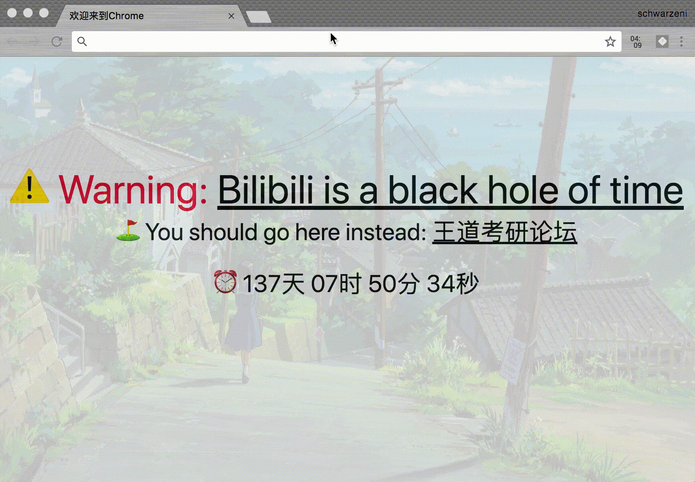

写了Chrome插件，可以起到对指定url进行阻塞的功能，记录一些要点
项目的GitHub地址在此
环境参数
- macOS v10.13.4
- Chrome v67
总体设计
两部分
第一部分是导航条右侧的pop菜单，提供对相应url的添加，删除功能
第二部分是在background运行的代码，进行request请求并对其进行筛选，block掉指定的url
使用localstorage对url进行存储，数据格式如下
1 | { |
pop菜单设计

使用input对其进行添加，点击下列url列表对其进行删除
popup.html作为入口文件，需要在manifest.json中添加如下声明
1 | ... |
别的都很简单，就是对input，localstorage的处理，dom的操作，这里就不多说了
对了，js的dom接口本身提供删除node的操作，从网上copy了一份代码，实现了此功能
1 | Element.prototype.remove = function () { |
这样就可以进行如下操作
1 | document.getElementById('xxx').remove(); |
url的监听与block
使用Chrome提供的 chrome.webRequest.onBeforeRequest 即可
index.js作为文件入口，先在manifrst.json添加
1 | "background": { |
由于需要在后台一直运行，所以参数persistent为trues
1 | // 对指定的url进行阻塞 |
详细的api见此
两个功能块之间的交互
使用 chrome.runtime.onMessage 和 chrome.runtime.sendMessage 即可，当用户进行添加或删除url操作时，发送消息提示后台程序对url列表进行更新（重新读区localstorage内的数据即可）
最终效果如下图
